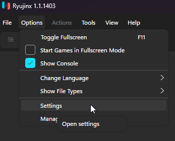
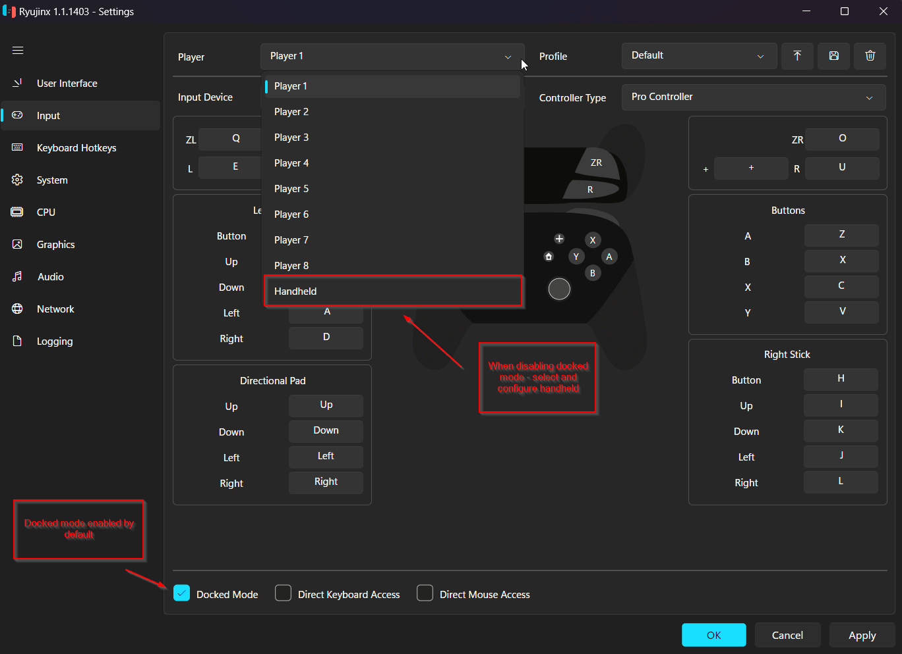

Switch 模拟器两家独大，Ryujinx 为什么在跨平台党里更吃香
Switch 模拟器圈经历过洗牌后只剩两个主力，Ryujinx 以跨平台覆盖和图形后端灵活性站稳了脚跟。这篇对比从老用户的角度拆解它的差异化优势与取舍。
Switch 模拟器这个品类的格局这两年其实挺明朗的——曾经百花齐放，经历过一次停摆事件后，真正还在活跃更新、社区讨论度不掉队的就剩两家。如果你只在 Windows 上玩，选哪家差别不算大，但一旦你想在 macOS 上跑、或者笔记本是双显卡配置，Ryujinx 的存在感就立刻出来了。
我两家都长期用过，从 Windows 台式机到 MacBook Pro 都试过，今天单独把 Ryujinx 拎出来说，去它的ryujinx官网扫一眼就能感受到那份认真——它在跨平台覆盖这件事上做得比另一家更扎实，而且很多设计细节是给"真折腾"的用户留的入口，不是那种装完点一下就完事的模拟器。
图形后端三选一，别人做不到
这是 Ryujinx 最实打实的差异化优势。打开图形设置页，你会看到一个下拉框让你在 Vulkan、OpenGL、Metal 之间挑。另一家主力模拟器基本锁死 Vulkan，而 Ryujinx 给了你三个选项——Windows 和 Linux 上可以走 Vulkan 或 OpenGL，macOS 用户则有 Vulkan（经 MoltenVK 转译到 Metal）和直接选 Metal 后端两条路。
为什么这很重要？Vulkan 确实是性能首选，CPU 开销低、多线程渲染效率高，绝大多数游戏用它帧率最高。但模拟器重建 Switch 的 Maxwell GPU 毕竟不是原生硬件，总有那么些游戏在特定后端下出问题——花屏、贴图错乱、启动就崩。这时候切到另一个后端对照一下，往往就能定位问题根源。如果另一家只有 Vulkan，遇到这种情况你基本就卡死了。

驱动是后端体验的地基，后端选得再对，驱动旧了照样报 Video Core Error——ryujinx文档里有专门的常见报错速查，遇到问题先翻那里省得瞎试。Ryujinx 在 Linux 下的 Vulkan 驱动支持做得尤其扎实，Steam Deck 用户用 Linux 包直接跑就能工作，这在模拟器圈子里不算常见。
Docked 模式不只是画质，还决定手柄配在哪
很多人第一次接触 Ryujinx 会被输入设置页顶部那个 Docked Mode 勾选框搞懵。勾上和不勾，差的远不止"画面像不像插了底座"——它同时决定了游戏的分辨率目标、帧率档位，以及你该去哪里配手柄。
这是个反直觉的设计，但逻辑很顺：Switch 游戏运行时会探测自己插没插底座，据此决定内部渲染规格。勾了 Docked 等于告诉游戏"我在电视上"，游戏就按高规格跑。同时，Docked 模式下你配手柄要去 Player 1 那个槽位，Handheld 模式则去 Handheld 槽位。很多新手勾了 Docked 却把手柄配在 Handheld 槽位上，结果就是画面正常但按键全没反应。

这个双槽位设计其实很实用——你可以在 Player 1 槽位配一个 Pro Controller 风格的配置，在 Handheld 槽位配掌机模式下的键位，运行中随时切换。另一家主力模拟器的输入设置更偏向"一套配置走天下"，没有这种模式绑定的槽位概念。
上手门槛：密钥和固件是绕不开的
说了两个优势，也得说它的取舍。Ryujinx 的上手门槛比另一家主力模拟器略高一点，主要卡在密钥文件和固件这两块——Switch 游戏的加密是硬件级的，模拟器想跑必须拿到对应的密钥和系统固件镜像。
另一家主力模拟器在很多场景下可以通过联网从服务器拉取这些文件，对新手来说更省心。Ryujinx 坚持本地文件放置的方式，密钥文件必须放在特定目录（Windows 在 %AppData%/Ryujinx/system/，Linux 在 ~/.config/Ryujinx/system/），固件也需要手动安装。这多了几步操作，但换来的好处是彻底离线可用——对于 Steam Deck 或者不想联网的用户来说，这反而成了优点。安装包从官方下载拿就行。
另外，Ryujinx 的 Linux 包管理也比另一家细致，有 AppImage 免安装和 tar.gz 解压两种形态，三大发行版的依赖补齐命令都列在文档里。但反过来，它对系统库的依赖也更明确——SDL2 和 OpenAL 缺一个都启动不了。
选购结论
如果你是纯 Windows 用户，而且只在一台机器上玩，两家主力模拟器的体验差距没那么大，随便选都行。但只要你符合下面任意一条，Ryujinx 就是更合适的那一个：
- 用 macOS 玩 Switch 模拟器，Ryujinx 是目前体验最完整的选项，Metal 后端的支持在 Apple Silicon 上表现扎实；
- 想在 Steam Deck 上跑，Ryujinx 的 Linux 包和离线可用特性比另一家的方案更稳；
- 笔记本是双显卡配置，Ryujinx 的 Preferred GPU 下拉可以明确指定独立显卡，不会被核显抢走导致"能玩但巨卡"；
- 喜欢折腾图形后端，遇到渲染问题想自己切后端排查的。
一句话总结：跨平台党选 Ryujinx，它在覆盖面上的广度和细节上的扎实度，目前没有哪家能完全替代。项目本身是开源的，GitHub 上能看到完整源码，国内用户也可以在 Gitee 和 GitCode 上拿到同一份镜像。